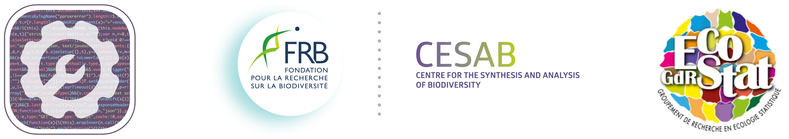
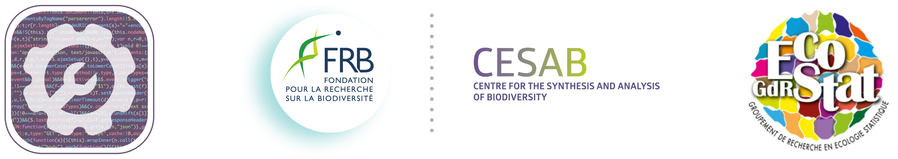

Bienvenu.e sur le site internet des élèves du FRB-Cesab et du GDR-EcoStat. Notre objectif est de faire des retours aux organisateurs pour rendre encore plus géniales les prochaines éditions de la formation ! Tu peux partager ton ressenti sur la formation avec un petit commentaire. Tu peux aussi mettre en ligne ton projet GIT pour partager le résultat de cette belle semaine.
Pour ajouter ton commentaire au livret d’or, voici les étapes à suivre :
Choisir un alias, ca sera le nom sous lequel tu seras identifié.e sur le site internet
Forker la branche du dossier du livret d’or
Modifier le document
commentaires.qmddirectement sur github, en y mettant ton superbe avis sur la formation (positif et/ou négatif, tout est bienvenu). N’oublie pas de bien nous préciser ton alias !
Aide : Les commentaires se trouvent dans la section délimitée par :
::: panel-tabset
## Posts
Commentaires
:::Appuyer sur
pull requestsur le github
De la même manière, pour partager ton git contenant ton travail :
Choisir un alias pour ton équipe, ce sera le nom sous lequel apparaîtra votre projet.
Forker la branche du dossier du livret d’or, ou bien aller directement sur le dossier forké si c’est déjà fait.
Modifier le document
index.qmddirectement sur github, en y mettant le lien vers ton site internet dans la section suivante et de la manière suivante :
::: panel-tabset
## Projets
[le projet de nom de votre équipe](urldeversprojet)
:::Enregistrer tes modifications locales sur github.
Appuyer sur
pull requestsur le github
On a très hâte de te lire <3